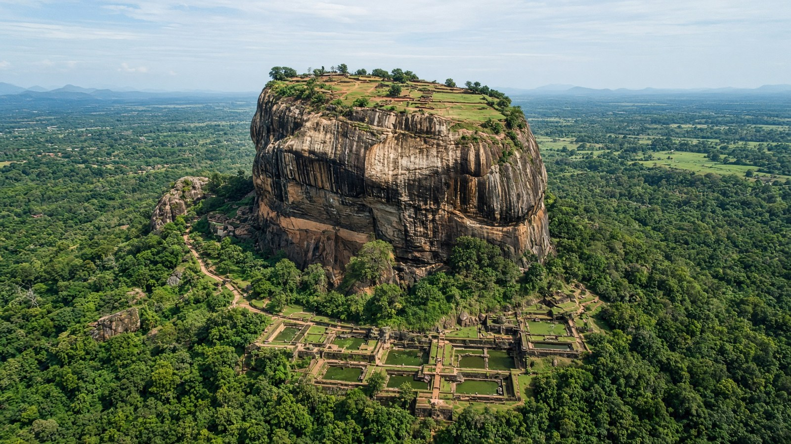

آسيا
سريلانكا
Sri Lanka
جزيرة الشاي والمحيط.
- العاصمة
- سري جاياواردنابورا
- نظام الحكم
- جمهورية
- التأسيس / الاستقلال
- 4 فبراير 1948
- النوع
- جمهورية
منذ التأسيس
استقلت سيلان في 4 فبراير 1948. العاصمة الإدارية سري جاياواردنابورا.
معالم
- معلمسيغيريا
صخرة.
- معماركاندي
المعبد.
- طبيعةالجنوب
شواطئ.